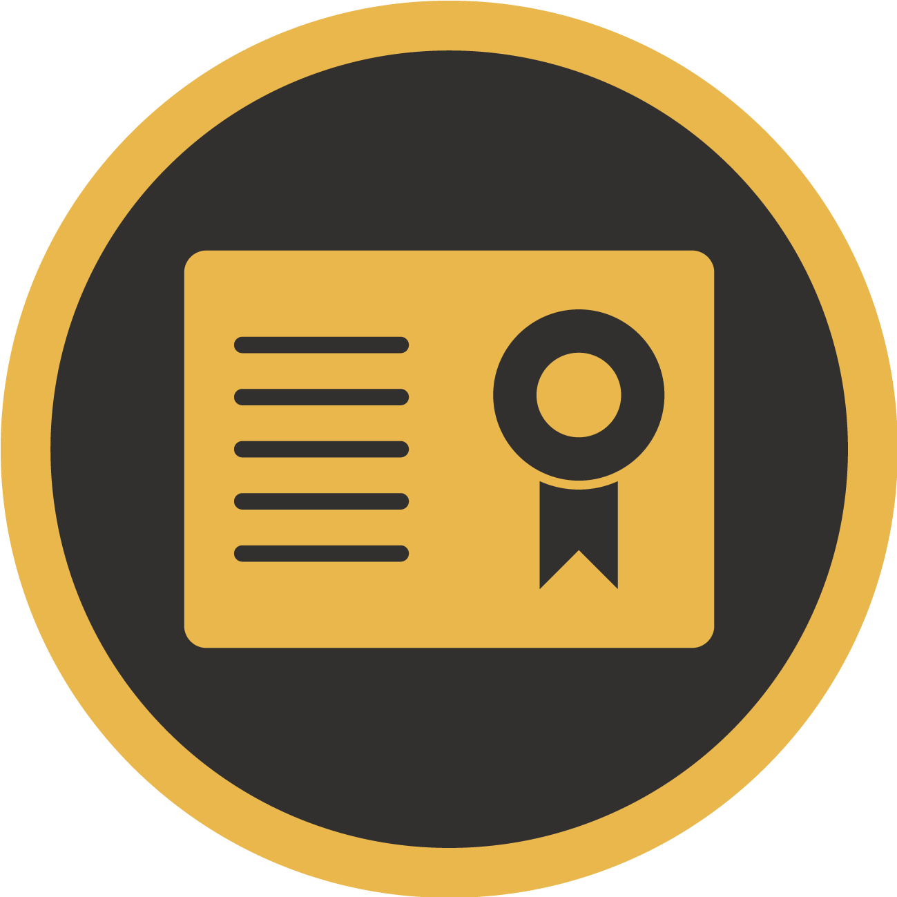

KARTHIK RAJA
Thoothukudi|9600717048|karthikraja.a.ece@gmail.com

Profile
I am seeking a competitive and challenging environment where I can serve your Organization and establish a career for myself.
Education
- B.E Electronics and Communication Engineering (Coimbatore)- 64%
-
Higher Secondary Certificate
(Thoothukudi)- 84% -
Secondary School Leaving Certificate
(Thoothukudi)- 94%

Activities
- Attended the Workshop in NIT Trichy on the topic “IOT Training using PSoC4 BLE” by Cypress Semiconductor”.
- Attended the Workshop in NIT Trichy on the topic “IOT Training using PSoC4 BLE” by Cypress Semiconductor”.
- Attended a seminar on “Smart Wireless Sensor For Healthcare MonitoringUsing IOT”.
- Attended a Industrial Visit at MSC/HLR SBC EXCHANGE & NIB at Coimbatore.
- Attended a Two days seminar on “Awareness of Mobile Phone Radiation Exposure and their ill effects on Human Beings”.
Area of Interest
- Computer Technology
- Designing
Skills
Technical-Skills
- Trained on Java SE
- C++
- JavaScript
- HTML & CSS
Additional-Skills
- Organization
- House Wiring
- Creative thinking
- Time management
- Quick Learning
- Good Reading

Professional-Skills
- Good in using Microsoft office.
- Skilled in working with Photoshop (CS6).
- Good in editing videos using Adobe
- Premiere and After Effect.
- Pc and Laptop software service.
- Skilled in Android Flashing.
Work-Experience
- 3 months Internship in SEO and Lead Generation.
- Trainer in BPIS Pvt Ltd (Coimbatore), 1 Year.
- Jr Assistant in Venus Home Appliances, 6 Months.
- ERP and Maintenance Supervisor, 9 months.